Communication Goals
Using Steam and gaming data, we analyzed how video game sales evolve over time by year of release. Also, we looked at how it is different by publishers and genres.
Our Data

Steam Store Games
Dowloaded from Kaggle, the Steam Store Games dataset contains information about various aspects of 27,000 games on the Steam store from June 1997 to April 2019. There are a total of 18 features, including price, ratings, genre, time played, number of positive/negative reviews.
Global Video Game Sales in Volume (1983-2017)
Downloaded from data.world, this dataset contains information about total sales in North America, Europe, Japan, as well as total global sale by each game from 1983 to 2017. It also includes features like platforms, release years, genres and publishers.
Genres Over Time

Throughout the years, we can also observe how playtime and price of games in different genres changed over the years as well. As Steam evolved more and more, we wanted to investigate which genres were the best "bank for buck", the idea that games in certain genres were the most "worth it" for the price. We also wanted to see how prices and playtime of each genre compared to each other. Since this wasn't a strict category that was given, we created our own metric, consisting of the median playtime divided by the price. Although the metric itself is quite arbitrary, it can give us a good relative gauge to see which genres had people playing the longest, compared to how much was paid. Thus, a relatively expensive game that is played for a long time would not be marked as high in terms of "back for buck" as compared to a cheaply priced game that is played for the same amount of time.
Without further ado, we begin in the late 1990's to the early 2000's
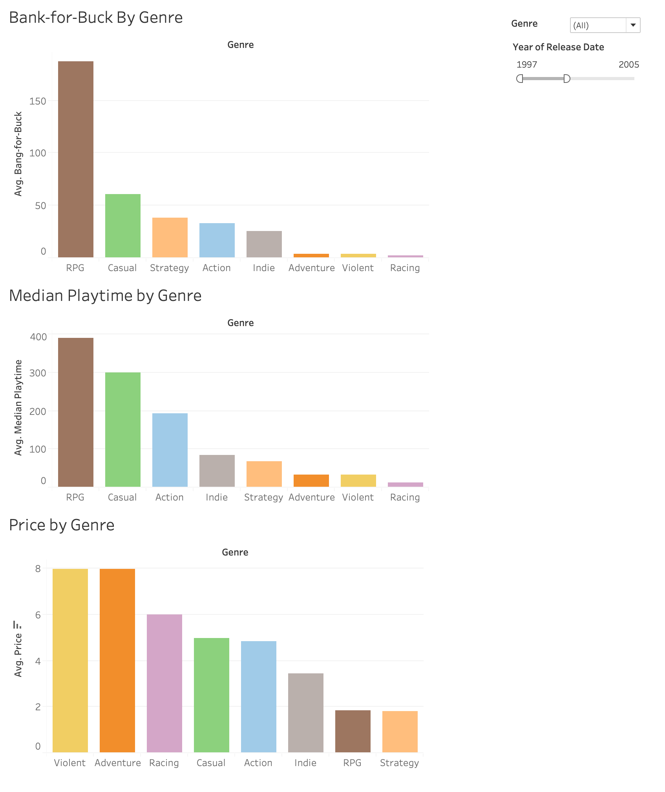We observe that in the late 90's and the early 2000's (until 2005), the genre that was most "bank for buck" was "RPG" games by a large amount. Of all the genres, it was played the most, yet it ranked the second to lowest in price. On the other hand, "Violent" and "Action" games, which were the most expensive, were relatively short in terms of playtime, thus ranking very low in "bank for buck". This makes sense, however, as most of the action and shooter games had a definitive end. RPG games, on the other hand, generally allows the player to explore open world. It was also during this time that the very popular Sony Playstation 2 console came out, which had the widely successful Grand Theft Auto RPG games. These kinds of games were very unique in that players could still explore the world even long after the main story of the game had ended.
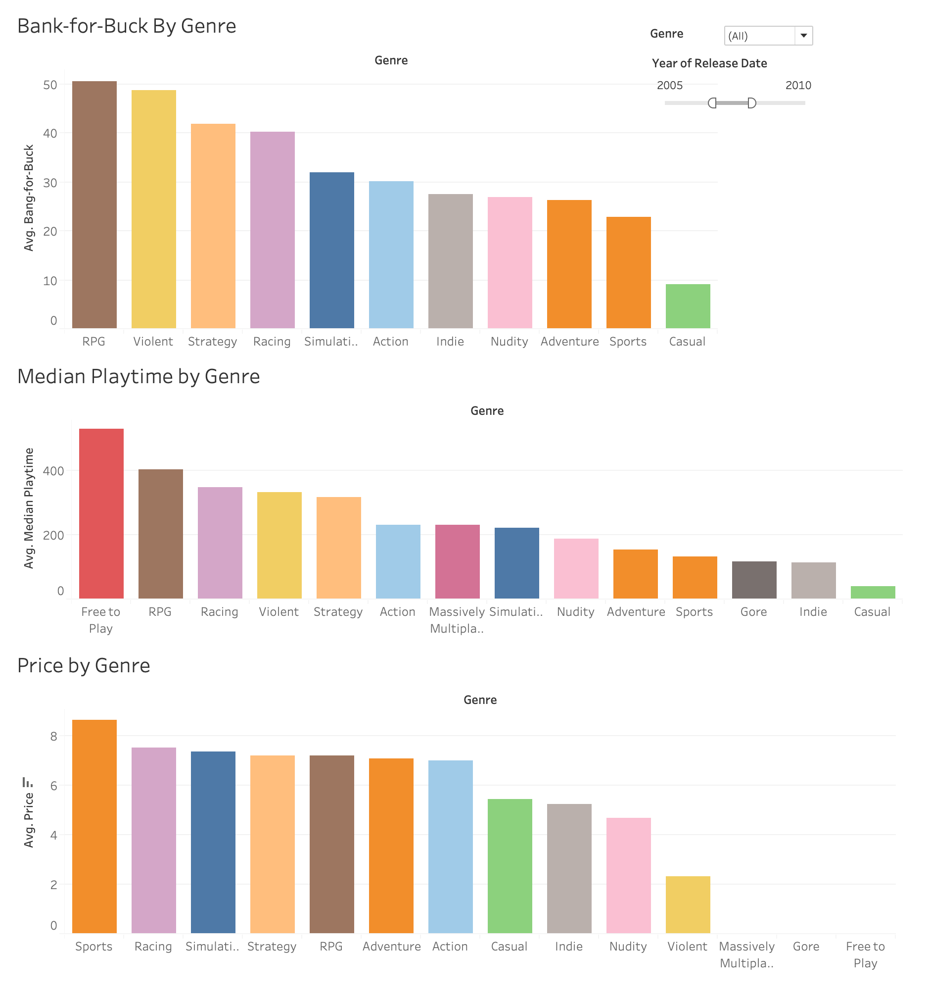Moving into the second half of the 2000s, RPG games still maintain its position as the best "bank for buck" genre. However, it was around this time that the "Free to Play" and "Massively Multiplayer" genres emerged, both of which are free. This would render the "bank for buck" model invalid, as the most "worth it" games would be the free ones, since there is no cost. Excluding these "free game" genres, we still see RPG games as the top position for "bank for buck", but there was a sharp increase in the playtime of "Free to Play" games. The sudden increase in the "Free to Play" games were most likely due to the advent of the very popular iPod Touch, which was a global phenomenon. Novel games where the action of a player comes from the touch of a screen was a huge milestone in the gaming community. On the other hand, the sharp increase in Massively Multiplayer games is most likely due to increase accessibility to computers to the average household, as well as the the release of games like World of Warcraft, which is considered one of the most successful massively multiplayer games in history.
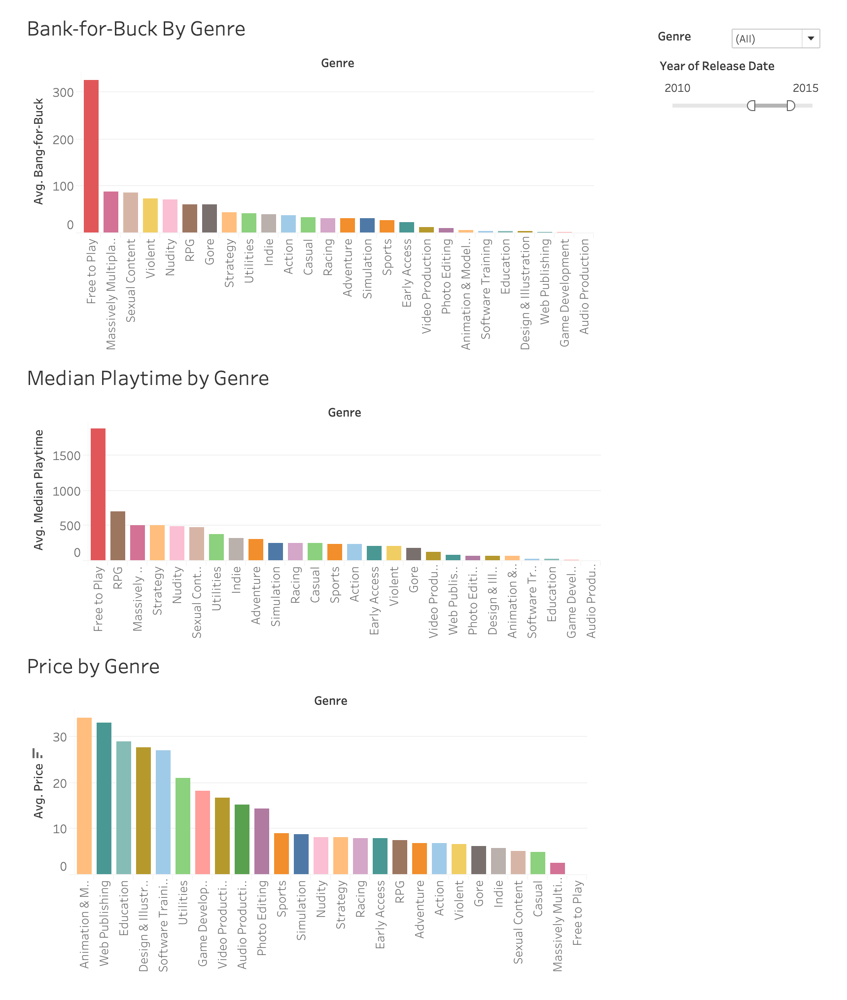Moving into the first half of the 2010s, there is an increase in the number of genres in Steam, increasing its range from predominantly gaming to educational and publishing applications, such as "Web Publishing" and "Education". These genres were relatively expensive on the market, as the top ten highest priced genres were these categories. However, the playtime was relatively low, making these genres the lowest in the "bank for buck" model. Instead, games that were free ("Free to Play" and "Massively Multiplayer") dominated the "bank for buck" model, and RPG games went down in rank. Interestingly, Massively Multiplayer and RPG games had similar playtime results, but RPG games became more expensive, which is why Massively Multiplayer games were more "worth it".
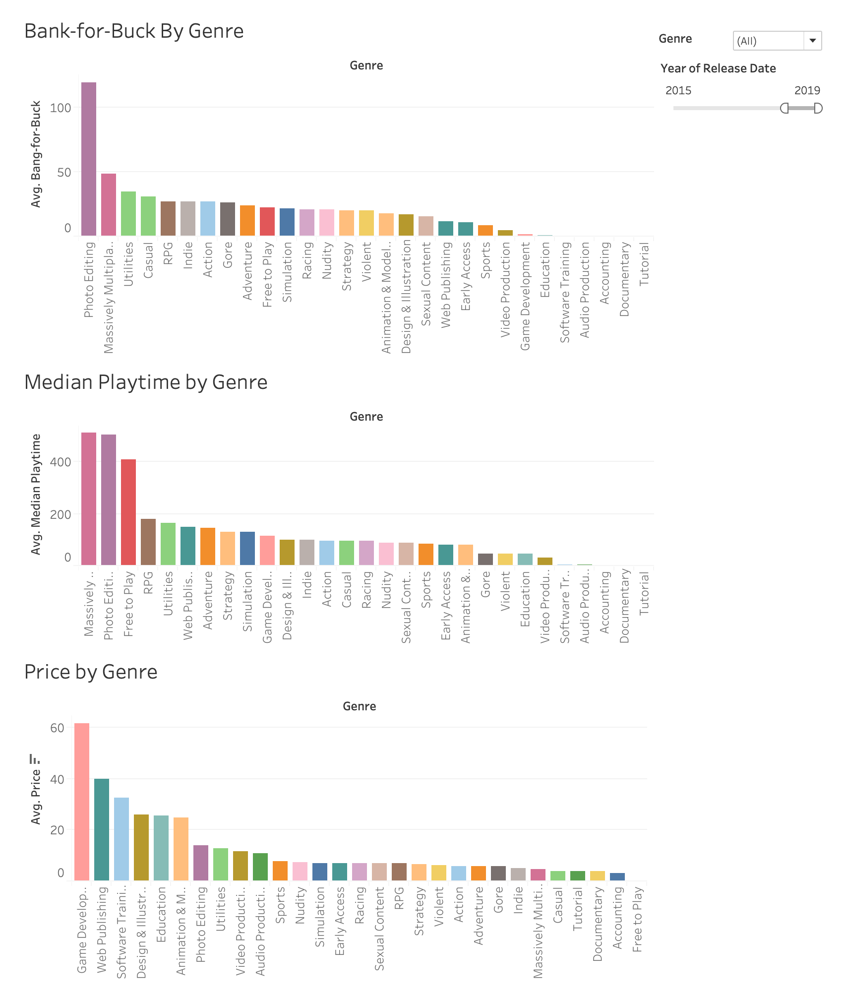Finally, from 2015 to now, there is a sharp increase in the "Photo Editing" and "Massively Multiplayer" genre in both playtime and the "bank for buck". They are both relatively cheap, but they have a significantly higher playtime than all the other genres. Another interesting aspect we see is that there is an increase in the price for game development, as ranking first in terms of price. However, it ranks relatively low in terms of playtime and therefore "bank for buck". This could be an indication of how game development is often tried out by a vast majority of people, but due to the sheer difficulty, many users might never finish making their game, rendering it a relatively low median playtime.
Thus overall, we see how Steam evolved over time. It started off with few genres and that were widely successful, namely, RPG, Casual, and Action games. It was then followed by the emergence of "free" games, which was vastly popular and had long playtime. There was no upfront cost to these games, making them wildly attractive. Finally, as the average computer became more and more powerful, the scope of Steam widened to include production applications, which was generally on the more expensive side. Although it was not very much used when it first released, it has since grown more and more prominent.
It is important to note that this model of "bank for buck" only looks at playtime, not necessarily satisfaction. This is only one perspective into looking at genres that were the most "worth it". Other avenues include positive and negative reviews, sales, etc.
Genres Over Time
When you think of your favorite video game companies, what games come to mind? Do particular genres seem to crop up with some companies than others? Let’s take a deeper dive and see what the data says! In the following examination of global video game sales data, we will analyze the games that were produced by some of the most illustrious game publishers that are known for both producing games as well as consoles: Nintendo, Sony, and Microsoft.
Nintendo
Ahh, Nintendo. Their consoles often represent the quintessence of video games with world-renowned characters such as Mario, Donkey Kong, and Pikachu. Nintendo also harkens back to the era of blowing into game cartridges to dislodge any dust that definitely was causing the game not to run. But what genres have been most lucrative for Nintendo over time?
If you were thinking about all those hours you poured into hopping over enemies and beating the clock as Mario, Donkey Kong, or Kirby, you’d be on the right track. Nintendo has by far made its biggest fortune in the Platformer genre, as seen by the green line in the below chart.
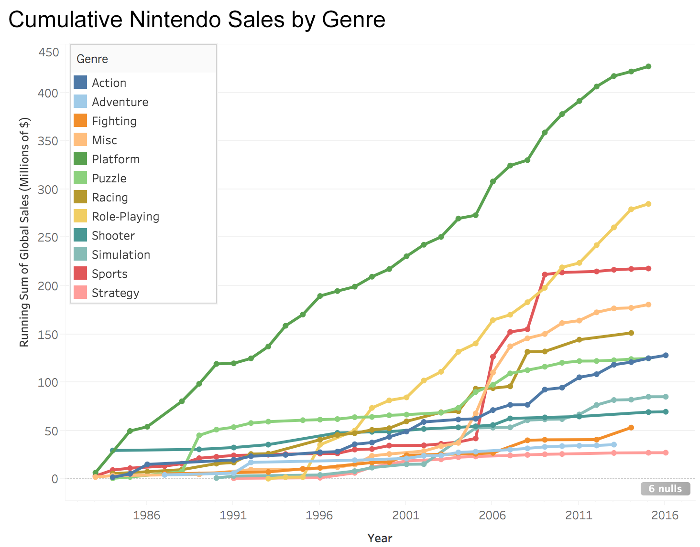In fact, Looking at the top ten highest-selling platformer games…well, all of them are Nintendo!
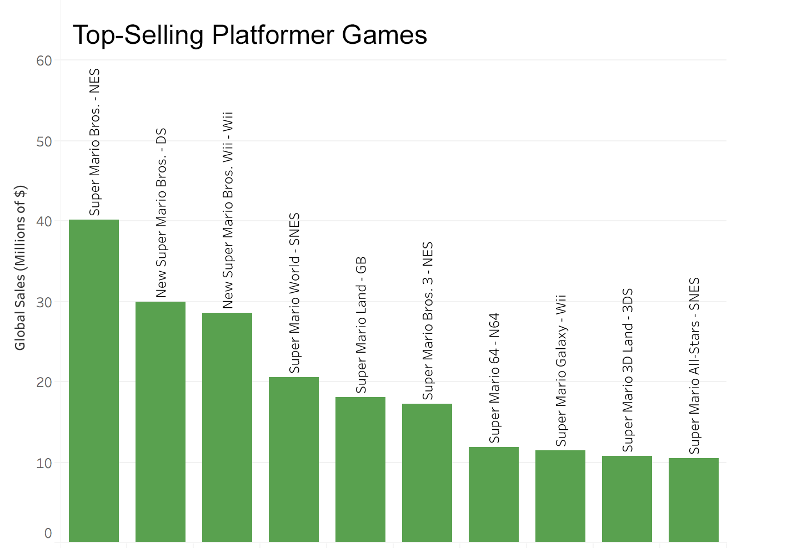But Nintendo has also had success in other genres. Franchises such as XenoBlade Chronicles and Pokémon have boosted Nintendo’s total sales in Role-Playing games, and the Legend of Zelda has had tremendous success as a hybrid Platformer and Action game. One genre that Nintendo did not have much success in until 2006 is Sports:
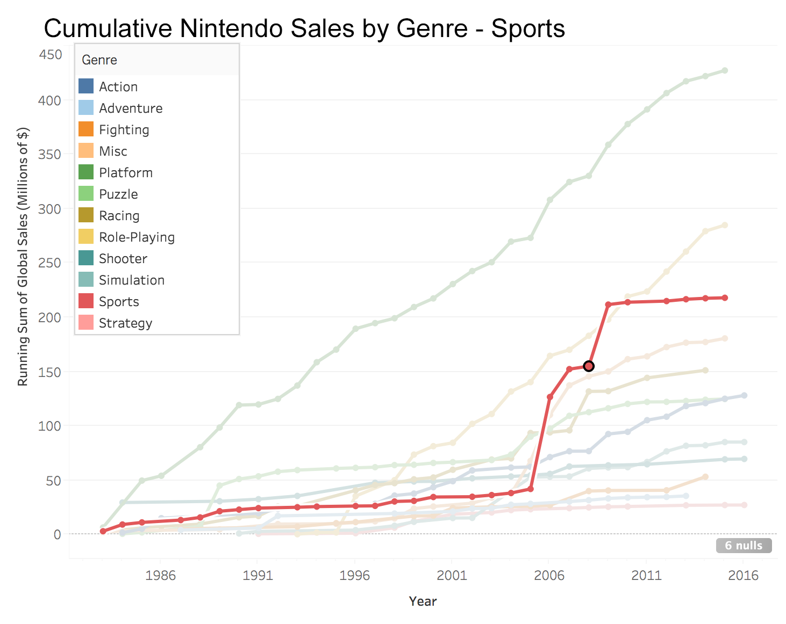What happened in 2006? Well, Nintendo released the Wii console to tremendous fanfare, and one of its launch titles enjoyed exceptional success: Wii Sports! Because of the boost from Wii Sports, the Sports genre actually outsold every other genre for Nintendo in 2006, beating out classic staples such as Yoshi’s Island and The Legend of Zelda: Twilight Princess.
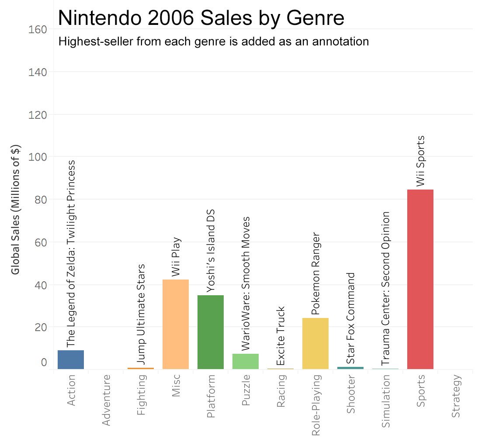How does this compare to other major game development studios? Let’s take a look at Sony!
Sony
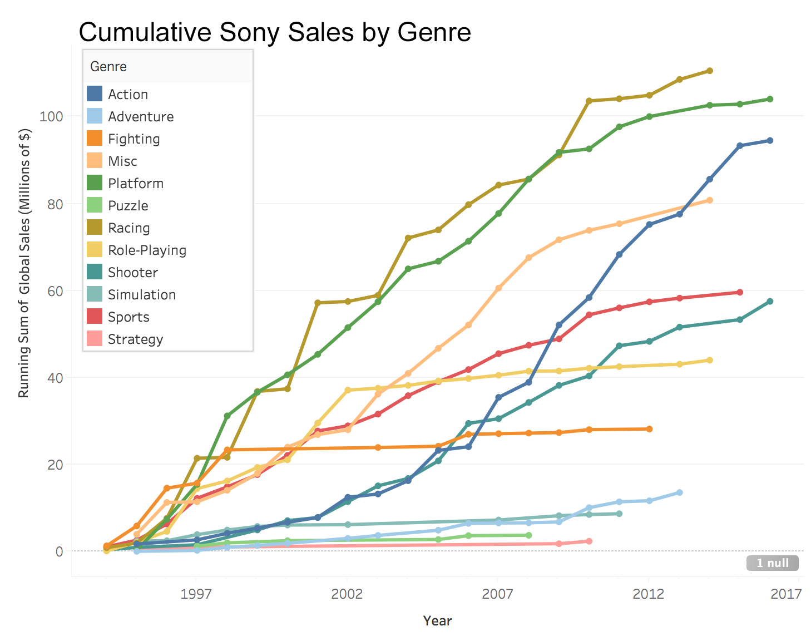Sony has also had success with Platformers, due to franchises such as Spyro and Ratchet & Clank. However, Sony has also been very successful with its Racing games. Looking at the top-selling racing games, it is clear that Sony and Sony consoles have hosted many of the most lucrative racing games (although they don’t nab the top spot…that goes to Nintendo’s Mario Kart!):
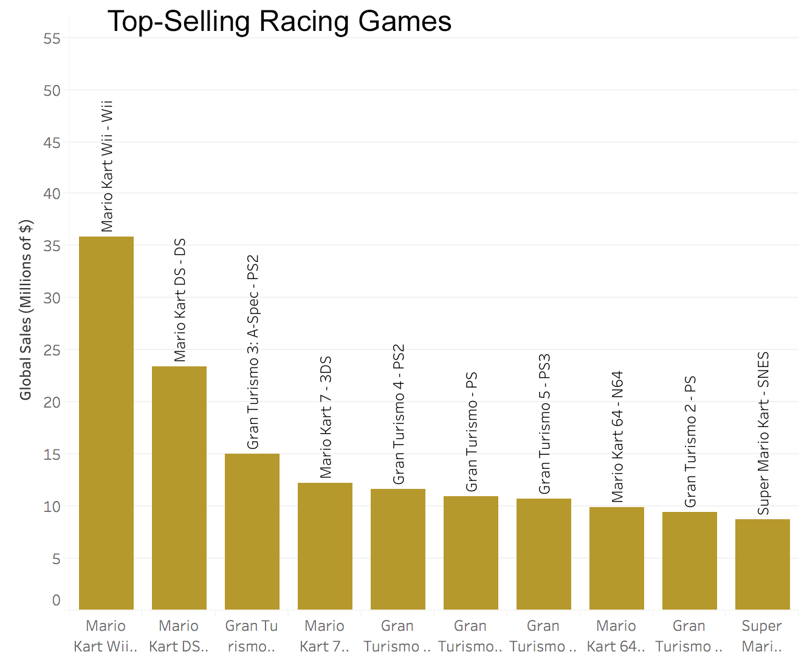Microsoft
So what about Microsoft? Home of revenue heavyweight franchises such as Halo and Gears of War, it is unsurprising that the most profitable genre of games produced by Microsoft Game Studios is the Shooter Genre.
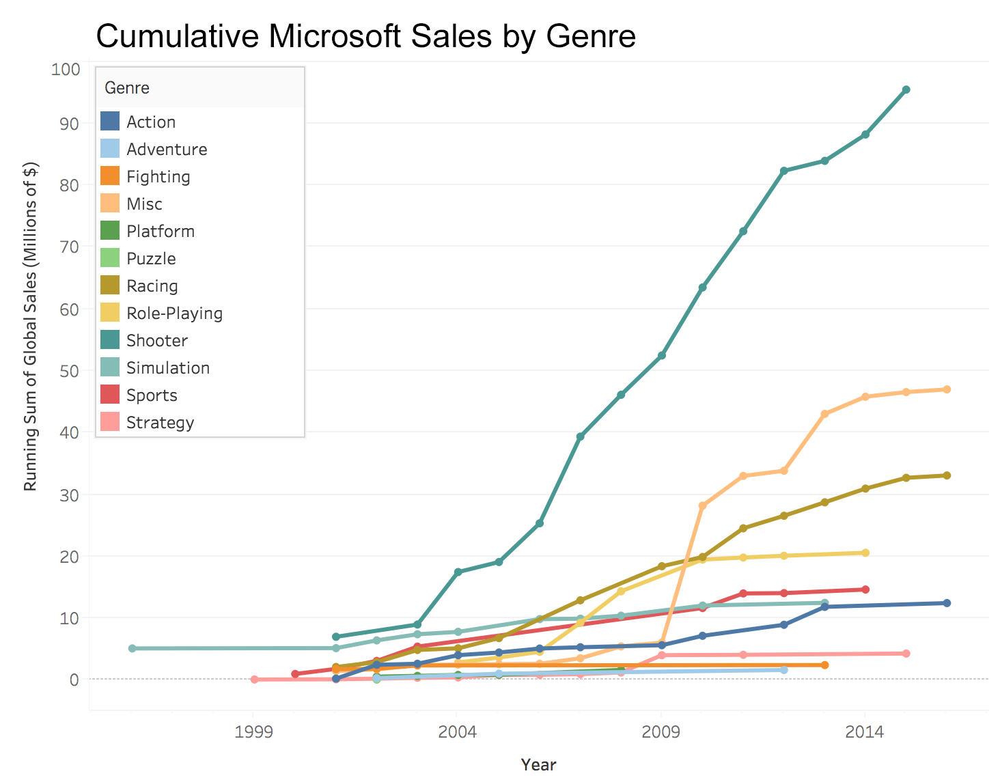Aside being a prolific producer of shooter games, there is also an interesting pattern in the above visualization. The “Misc” category experiences a massive explosion in total sales in 2010. Exploring this further, we find that the most lucrative Misc. game is the Kinect Adventures. This makes sense, because the popular motion sensor add-on to the Xbox 360, the Kinect, was released in late 2010. This is particularly interesting, because Nintendo also experienced tremendous success when it released a motion-sensor technology (2006, with Wii Sports and other Wii titles).
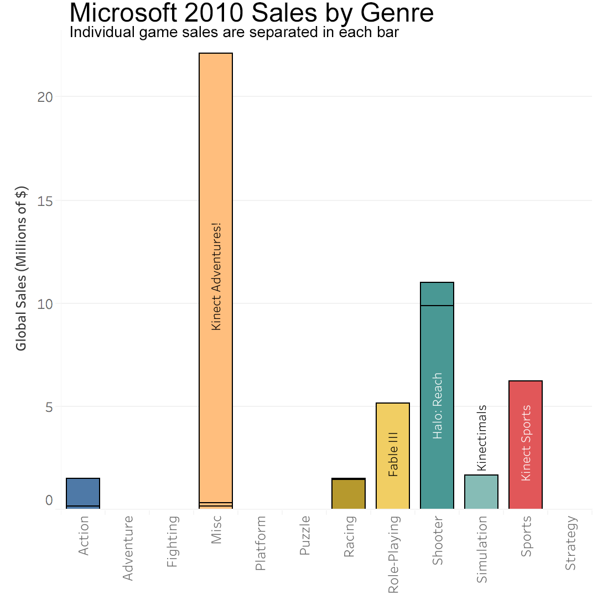From our exploration of some of the most renowned video game publishers, it is clear that each publisher has their own specialty when it comes to producing games. Nintendo has made its name with platformers, although they have had success with other genres as well, such as role-playing games and, more recently, sports games for the Wii. Sony dominates the racing genre, while also enjoying success in the platformer genre. Microsoft has focused on shooters, while also experiencing success with motion tracking games.
Now it’s your turn! Dig into the data and see if you can find your favorite video games and see where they fit in the video game economy for that specific year. To interact with the below plot, first select a publishing company (we included Sega, a company we didn’t explicitly talk about; see if you can find what genres Sega specialized in!). Then, explore the data by hovering over the lines and bars. Select a specific year by clicking on a datapoint on the line graph or using the scroll bar selector.